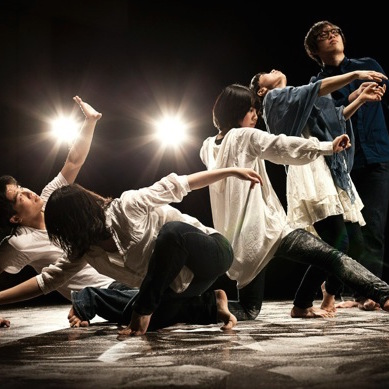

投稿者一覧 音楽 上遠野 文音 10期 - 邦楽（箏） 演劇 きのこの森 15期 - 劇団 ハコイリムスメ 15期 - 劇団 虹の素 14期 - 劇団 雑誌 TELSTAR 13期 - 宇宙フリーマガジン ダンス  À La Claire 11期 - コンテンポラリーダンス 舞台 阿部 万里香 11期 塚越 麻帆 12期 漫画・イラスト 又旅にあ 13期 - イラスト 美術 井口 信 11期 - 日本画
 きのこの森
きのこの森